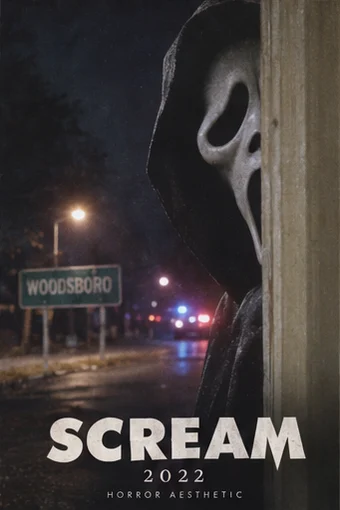

РецензияReview

КрикScream (2022)
Режиссёр: Мэтт Беттинелли-Олпин, Тайлер Гиллетт · СлэшерDirector: Matt Bettinelli-Olpin, Tyler Gillett · Slasher
★3.5 / 5Gore3 / 5
Новая волна убийств в Вудсборо ведёт к старым героям и новым подозреваемым.A new wave of murders in Woodsboro leads to old heroes and new suspects.
Перезапуск серии с уважением к оригиналу и с шутками про «реквелы». Убийства жёстче, а сюжет любит запутывать.
Возвращение Нив Кэмпбелл, Кортни Кокс и Дэвида Аркетта делает фильм тёплым для поклонников. Хорошее продолжение.
A restart of the series with respect for the original and jokes about “requels”. The murders are harsher, and the plot likes to tangle.
The return of Neve Campbell, Courteney Cox and David Arquette makes the film warm for fans. A good continuation.